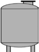
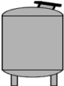
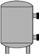
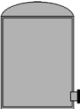
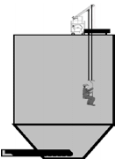
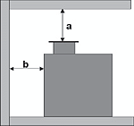

 |
1. Zugang oben
Beispiele: Tanks (stehend, liegend), Reaktoren Zugang mit PSA gegen Absturz bzw. Rettungsausrüstungen: Zugang zusätzlich mit Atemschutz: Zugang mittels eingestellter Leiter:
|
 |
2. Zugang oben mit schrägem Mannloch
Beispiele: Tanks (stehend, liegend), Reaktoren Zugang mit PSA gegen Absturz bzw. PSA zum Retten:
|
 |
3. Zugang über Mannloch seitlich (mit Absturzgefahr)
Beispiele: Destillationskolonnen, Silos Zugang mit PSA gegen Absturz bzw. PSA zum Retten: Zugang zusätzlich mit Atemschutz:
|
|
4. Zugang seitlich ebenerdig
Beispiele: Tanks, Wasserbecken Normaler Einstieg: Rechteckige Öffnungen: Zusätzlich mit Atemschutz:
| |
 |
5. Zugang seitlich, ebenerdig
Beispiel: Doppelwandige Behälter, Wasserbecken aus Beton Doppelwand-Behälter bzw. Behälter mit Wandstärken größer 500 mm Rechteckige Öffnungen: Mindestens 0,4 m² Mindestlänge der kürzesten Seite 600 mm
|
 |
6. Silos
Zugangsöffnungen zum Einfahren mittels Siloeinfahreinrichtung: Rechteckige Öffnungen:
|
 |
7. Kellergeschweißter Tank
Mannloch 500 mm Durchmesser a mind. 600 mm Mannloch 600 mm Durchmesser
|